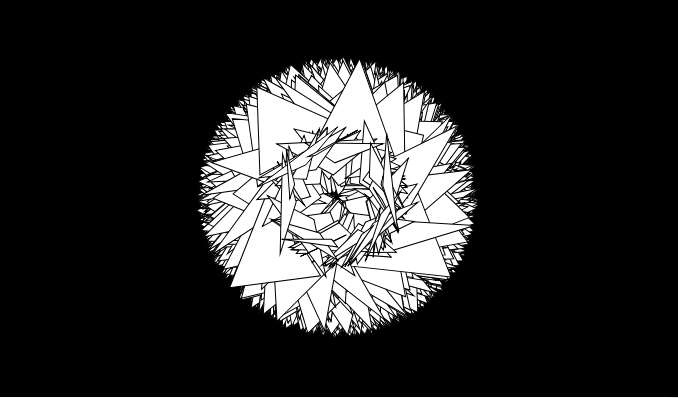

Creative Code / Digital Art
Creating an algorithmic art sketch
It begins with researching designs and ideas. I decided to focus on rotation and triangles. As a result most of my early versions looked like flowers.

We were studying math functions in p5.js. I was particularly interested in adding randomness.
Eventually, I added randomness to the alpha value of the colors, used it as a random walker, in the rotation angle and the size of my triangles.
My experiments felt chaotic and out of control at the time, but often resulted in beautiful artwork.

Coding
My approach to coding is to take one step at a time.
First, I created a rotating triangle. Then I added constraints and moved the triangles around the screen. They were still a single red color.
Finally, I change the colors, making the triangles on the right of the screen gradually turn yellow.
I slowly built up my code complexity.
Final Steps
Lastly, I organized my thoughts for the asssignment and finished my documentation for the project.
You can find the live version of the artwork on github.